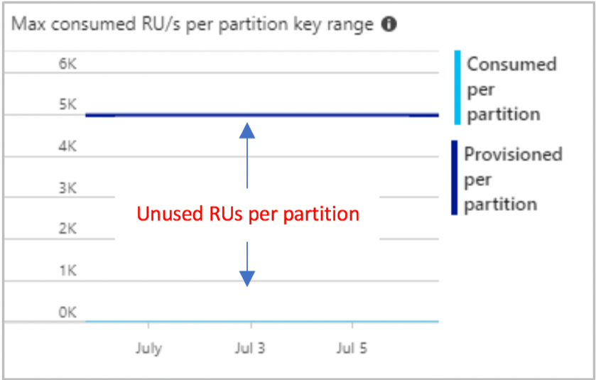

Intern Project
Intern Project
In this summer, I am the intern from the Cloud infrastructure team in Walmart Sam’s Club and my manager is Ciby. My project is to design a scheduler to help developers to dynamically scale CosmosDB resource based on time.
Background and Problem
I want to talk about some background information about my project. Azure Cosmos DB is a popular database among all application development teams in Sams. The billing of usage is based on Resource Unit configuration. Higher RU correlates to better performance and also greater cost. The problem now is for many developer, they just set RU to the peak usage in the beginning and never change it again. In order to save money by only setting high RU at specific time, I have built a scheduler system to make developers much easier to change RU in the time they want automatically.

Project Implementation
To begin with my project implementation, I would like to show you the whole system graph. The whole system is host on Azure. You may wonder why this simple tool looks so complex. It is because we want it become scalable. Every part of my system only do one job and all states are saved in database.

The front end is written in React.IS. The front end provides the following function for users:
- Login in from Azure portal and could only see database policies he has the access.
- Create, Update, read and delete policies for specific collections. It only allow user input valid data.
- Show current MAX provision RU for this collection. And user do not need to go to portal to check that value.
The backend is implemented with Java Spring Framework. It offers 11 RESTful API to provide data used in frontend and they also provide possibility for developers to set policies programmatically. For example, when developer want to do batch, they just need to call my RESTful API and they could change the RU in that time without using portal. Next, I will go through all the other component in my system. After we Iogin and set policies in the first part, the system will save all policies in a CosmosDB collection. There is a function will pull the executable policies every 2 minutes and send it to a EventHub. There is an another container instance will listen to the eventhub messages and when it receive the new event, it will change the target collection RU and it will send message to slack channel and update status of policies in the database. There is some screenshots for my system.

Learning
The biggest challenge I met is to make the whole system work on Azure. In the beginning, I thought it is an easy project and I built a work program that could run on single machine in 3 weeks. However, making it scalable and running all parts on Azure is not easy. There are lots of problems and bugs I met during the rest of my intern weeks. For example, Iogin process works fine locally, but it will get into infinite loop after putting all the code in web app, it could not redirect to the page I want. I stuck on that problem for 3 days, there is no workable solution online because they all used C#, not Java. I dug into the code and read error message carefully. It is because of https and http, I solved this problem by changing all https to http to avoid infinite loop. There is also other problems, like Timezone problem, React.IS table bugs, could not have enough log information from Function. Code itself did not have many problems, but Azure is challenging.
The second one is the difference between industries and school. In school, I only need to build a program that works, but in industry, I always need to think about how to make my program robust enough to serve more people. There also could be many bugs and problems not solved by anyone on the Internet, I need to do investigation by myself. The third one is to build connection in the company. In the past, I am an introverted person and I did not talk a lot during the work. After mid-term review, Ciby told me my problem and I decided to change it. I talked with teammates during the day and chatted with people in other team to learn more about the company. When I met problem, I also taught with colleagues and got some suggestions to help me solve them. As Sams Walton said: We’re all working together; that’s the secret. Team always could do more than one person. The last but not least is leadership. It is great honor for us to meet almost all leaders in Sams and Walmart. In those panel, we have a more deep understanding in Merchandise and this great company. During those panels, we knew more about the experience and failure they had in their career. I have a more reliable and clear expectation for my future life and career.